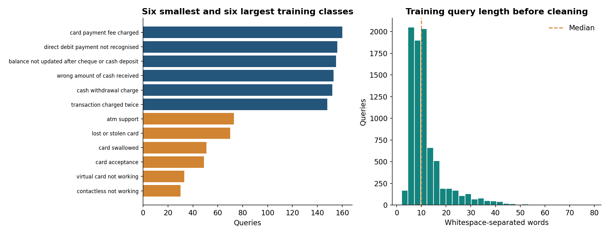
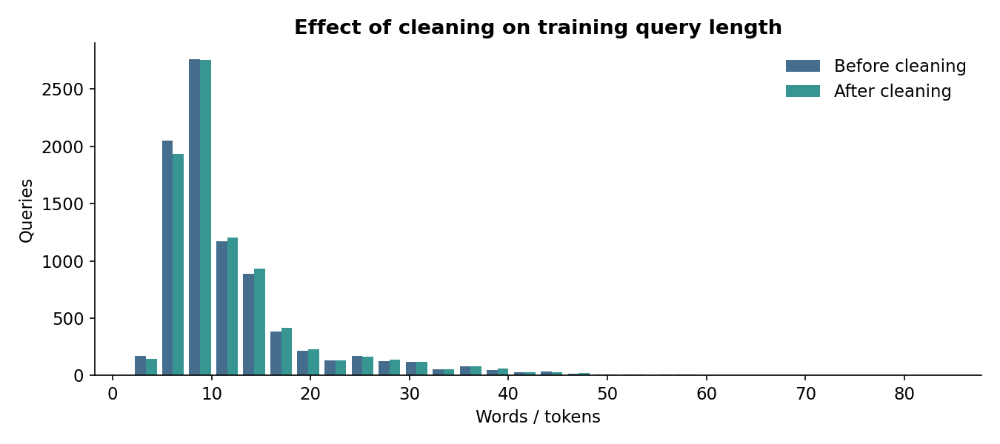

Industry Track / M1 and M2
Ticket Management System
Banking support ticket classification: problem definition and data preparation.
This version ends with prepared data. It contains no trained classifier, fitted vocabulary or prediction results.
M1: Problem and business case
Support agents manually read and categorize incoming banking queries. Similar issues can receive inconsistent labels, increasing triage effort. The project aims to help agents categorize those queries while keeping a person responsible for uncertain cases.
Users: support agents, triage staff and support managers.
NLP task: map one English banking query to one of 77 intent labels in a later milestone.
Business objective: reduce categorization time and inconsistent assignments.
Proposed future targets: macro F1 ≥ 0.80, accuracy ≥ 0.80 and a 20% reduction in median categorization time in an agent pilot. These are planning targets. We have not measured them in M1–M2.
The full problem brief, feasibility analysis and measurement plan are in M1_PROBLEM_BRIEF.md.
M2: Dataset and exploratory analysis
13,083 queries / 77 intents / English banking
PolyAI's Banking77 is suitable for the intent classification part of a banking support project. It provides text and intent labels. It does not provide sentiment, priority, routing or resolution labels.
Source: PolyAI repository, CC BY 4.0.
Paper: Casanueva et al., 2020.
All four raw source files pass pinned SHA-256 verification.

Training class sizes range from 30 to 160 queries, a 5.33 ratio. This imbalance makes macro F1 and per-intent recall useful future measures. The median training query has 10 words. The mean is 11.95, with a standard deviation of 7.92. The 95th percentile is 29 words.
All 77 classes · Class counts CSV · Complete statistics · Data card
Cleaning and exclusions
Source audit: both splits contain zero blank texts and zero blank labels. Cleaning normalizes Unicode, masks supported patterns, lowercases, expands common contractions and removes punctuation. Negations and stopwords remain. We do not stem, lemmatize or truncate.
Training rows leave the pipeline for the first applicable reason below. Every removal has a source row ID in removed_rows.csv.
| Reason |
Rows |
| overlap_with_official_test_group |
54 |
| duplicate_training_text |
42 |
| conflicting_training_labels |
2 |
Examples from the official training data
The left column already masks supported numeric and contact patterns. No fabricated training examples are added.

Split construction and leakage checks
|
rows |
labels |
groups |
| train |
8490 |
77 |
8470 |
| val |
1415 |
77 |
1411 |
| test |
3080 |
77 |
3067 |
All 3,080 official test rows retain their membership and labels. The remaining official training rows form train and validation using seed 42 and a grouped stratified split. Validation is 14.3% of retained training-source data. Every split includes all 77 intents.
Exact normalized queries share a group. Queries with at least three distinct word trigrams also share a group when Jaccard similarity is at least 0.85. Groups connected to test text leave the training pool. The train/validation split keeps each remaining group together.
- train val clean text overlap: 0
- train val duplicate group overlap: 0
- train test clean text overlap: 0
- train test duplicate group overlap: 0
- val test clean text overlap: 0
- val test duplicate group overlap: 0
These checks establish zero exact overlap and zero overlap under the defined lexical grouping rule. Semantic paraphrases can still remain. The dataset has no customer or conversation IDs for stronger separation.
Official test internal duplicate rows after normalization: 9. We retain these benchmark rows and report them.
Privacy considerations
Masking runs in this order: URLs, emails, card-like numbers, phone-like numbers, then remaining numbers. Counts below show rows matching each rule after preceding replacements. They do not establish that a matched value is real personal data.
|
train |
test |
| url |
0 |
0 |
| email |
0 |
0 |
| card |
0 |
0 |
| phone |
0 |
0 |
| number |
205 |
49 |
Processed data excludes an unmasked original-text column. Regexes can still miss names, addresses and alphanumeric account IDs. Raw benchmark data stays separate. The terminal demo runs locally and does not store entered queries. Real private tickets would require access controls and manual review of redaction.
Reproducibility and next milestone
Run python m2_preprocess.py, followed by python verify.py. The manifest records source, code and output hashes plus environment versions. No network is needed when the supplied raw files are present.
M3 will fit features and train models using training data. Validation will guide model selection. The test set remains reserved for later final evaluation. This submission reports data preparation only.